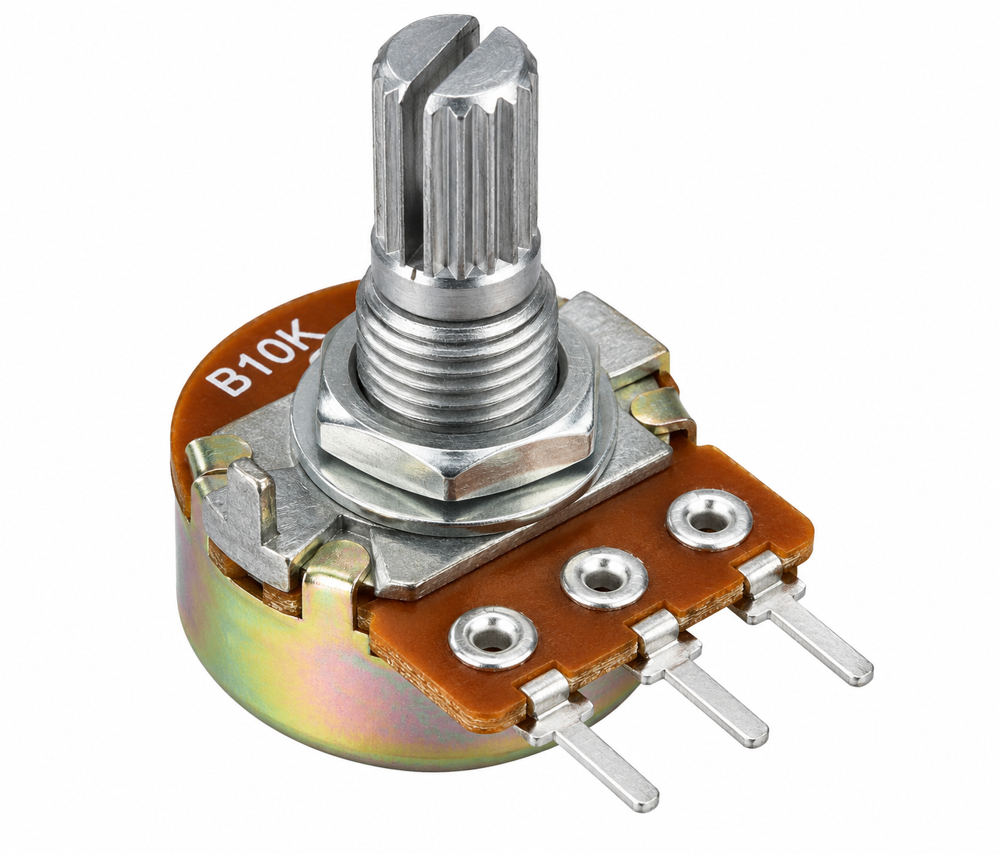

Digital_Tone_Generator.ino

Digital Tone Generator

To create a Digital Tone Generator using Arduino UNO, a 10 kΩ potentiometer and a buzzer, where rotating the potentiometer changes the generated sound frequency and therefore the pitch.
The Digital Tone Generator demonstrates how Arduino UNO can generate different sound frequencies using a potentiometer.
The 10 kΩ potentiometer works as an adjustable voltage divider. Its middle terminal provides a variable analog voltage to Arduino input A0.
Arduino reads the analog value using analogRead(), producing a value from 0 to 1023.
The map() function converts this reading into a frequency between 100 Hz and 2000 Hz.
Arduino then uses tone() to generate a square-wave signal on digital pin D8.
As the potentiometer rotates, the frequency changes and a compatible buzzer produces a different sound pitch.

Main controller that reads the potentiometer and generates the tone.

Provides adjustable analog input to change the tone frequency.

Sound output component listed in the original experiment.

Used to assemble the experimental circuit.

Used for connections between the Arduino and components.
| Component | Terminal | Arduino UNO Connection |
|---|---|---|
| Potentiometer | Left terminal | 5V |
| Potentiometer | Middle terminal (Wiper) | A0 |
| Potentiometer | Right terminal | GND |
| Component | Terminal | Arduino UNO Connection |
|---|---|---|
| Buzzer | Positive (+) | D8 |
| Buzzer | Negative (−) | GND |
Confirm the buzzer's electrical specifications before connecting it directly to D8. A buzzer requiring more current than the Arduino output can safely supply needs an appropriate driver circuit.

The Arduino UNO reads the potentiometer using the analogRead() function.
The analog-to-digital converter produces a number between 0 and 1023.
The map() function converts the analog value into a frequency between 100 Hz and 2000 Hz.
frequency = map(potValue, 0, 1023, 100, 2000);
The tone() function produces a square-wave signal at the specified frequency on D8.
The code repeatedly adjusts the frequency as the potentiometer position changes.
Arduino Experiment · Code Review
Digital Tone Generator · Select a step to understand the complete Arduino program.
Select a step to highlight and scroll to the matching code lines.
Frequency represents the number of sound vibrations per second.
Higher frequencies normally produce higher-pitched sounds. Lower frequencies produce lower-pitched sounds.
A passive buzzer responds to an externally generated oscillating signal.
An active buzzer generally contains an internal oscillator and is designed to sound when powered.
For the variable tone() frequencies used in this sketch, a passive buzzer is normally preferred.
Try it: Slowly rotate the potentiometer while listening to a compatible buzzer. Observe how the sound changes as the analog input value increases or decreases.
When Arduino is powered, the program continuously reads the potentiometer and generates a corresponding tone signal.
Rotating the potentiometer changes the output frequency between approximately 100 Hz and 2000 Hz.
With a compatible sound transducer, the output pitch changes as the potentiometer position changes.
| Approximate Analog Value | Output Frequency | Expected Pitch |
|---|---|---|
| 0 | 100 Hz | Lowest |
| 256 | 575 Hz | Low–Medium |
| 512 | 1050 Hz | Medium |
| 768 | 1526 Hz | Medium–High |
| 1023 | 2000 Hz | Highest |
The Digital Tone Generator experiment demonstrates how Arduino UNO converts a variable potentiometer input into an adjustable output frequency.
The Arduino uses analogRead(), map() and tone() to generate signals between 100 Hz and 2000 Hz.
A compatible buzzer converts the changing frequency into audible tones with different pitches.